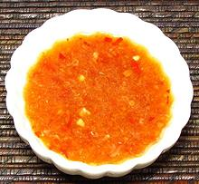

 |
Nuoc ChamVietnam - Nuoc Cham | ||||
| Makes: Effort: Sched: DoAhead: |
5 oz * 15 min Best |
An essential Vietnamese condiment for dipping and sprinkling. There are many variations, like adding chopped shallots, chopped nuts, or herbs. Some use only Lime Juice, but they spoil more quickly. Ccolor will vary with your chilis. | |||
|
|
4 2 3 1 1/2 5 |
cl T T T T |
Thai Chili, red Garlic Lime Juice Rice Vinegar Palm Sugar (1) Fish Sauce |
Make - (15 min)
|